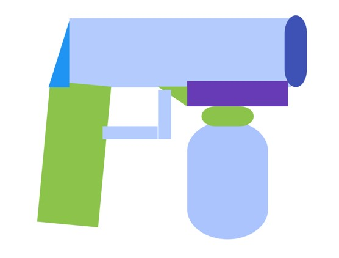
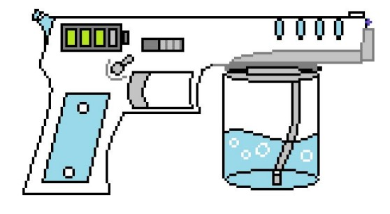
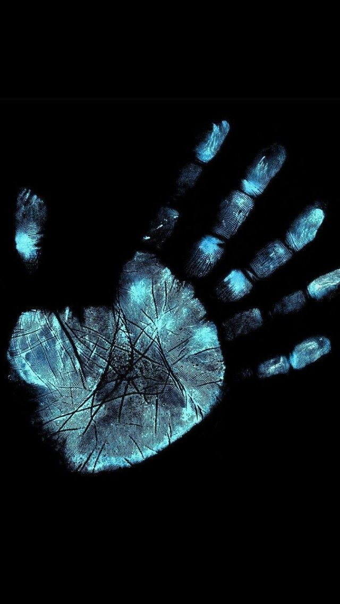

| Home | Product Details | Patent Page | Problems Encountered | Solutions | Phases Page | Users Acceptable Page | About the Founder |
FIRST CONCEPTS OF THE PRODUCT

The first concept of the product would look like the actual gun based on the picture.
It has battery percentage located on the side of the barrel. The grip would look like
the actual gun, there was no Menu Screen on the first concept except the On/Off Switch
located on the side of the gun. the UV-light bulb is small and it is located at the
muzzle of the gun. The concept was changed, the gun must look less harmful for the public,
the design was changed to look it more friendly. The UV-light bulb design was changed into
a trapezoid figure to detect the fingerprints accurately.
THE SOLUTION FROM THE TEAM

The Wireless UV-Light Disinfectant Gun aims to provide protection between the parcel and the customer itself from the Covid 19 Virus.
The team believe that the virus can be transmitted from the air particles from breathing, talking, sneezing and coughing where these small particles could attach to the parcel increasing the chance of the costumer.
in getting the virus. Aside from the product, The team have concerned at health when it comes to home. Family must ensured that they are safe from the virus, This equipment would help detect fingerprints on tools and disinfect to remove the particles. The product may not considered 100% to remove the virus but to lessen the risk on getting the chance of Covid 19.